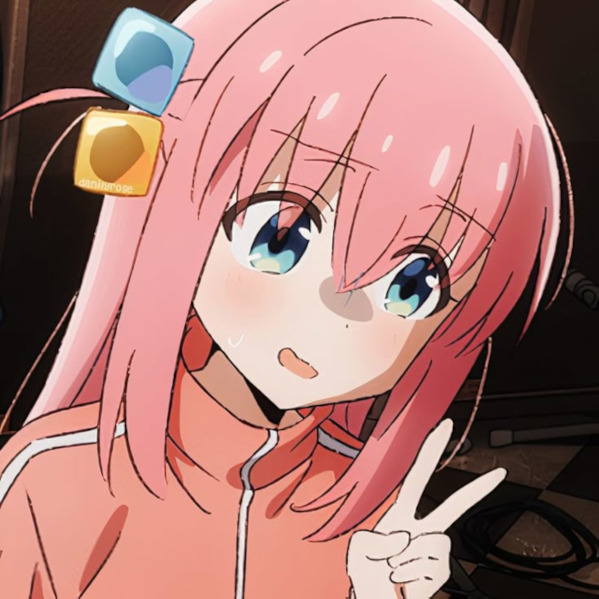
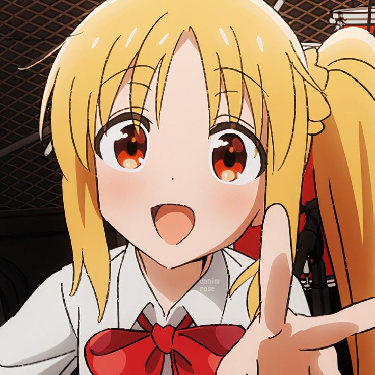
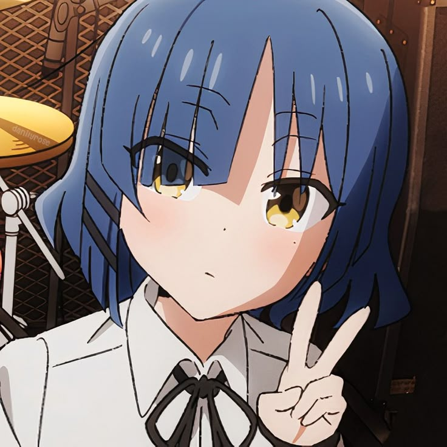
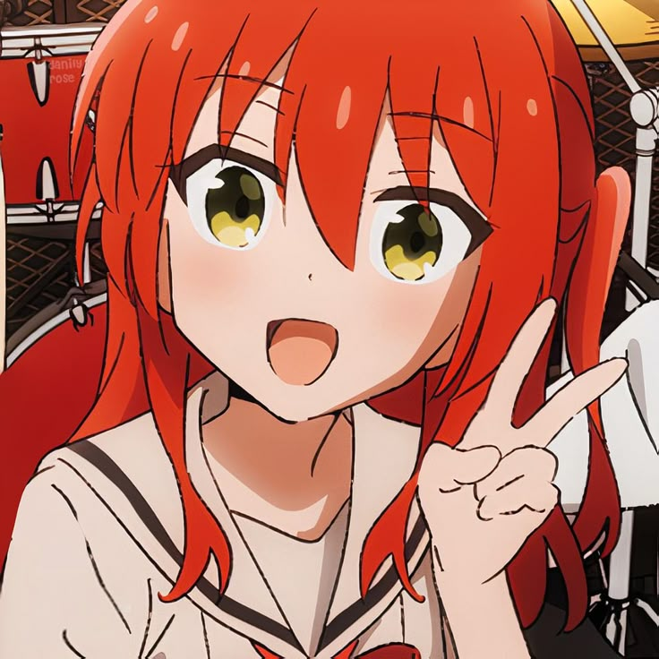

A música mudou a vida de Hitori,
mas ela não chegou até aqui sozinha.
Conheça as integrantes da kessoku Band!
Sobre o anime
Bocchi The Rock! acompanha Hitori Gohot, uma garota extremamente tímida e ansiosa que sonha em se tornar uma guitarrista incrível e tocar em uma banda.
Sua vida começa a mudar quando ela conhece Nijika Ijichi, que a convida para entrar na Kessoku Band como guitarrista. A partir daí, Bocchi enfrenta seus medos, faz novas amizades e descobre o verdadeiro significado de se conectar através da música.
Temas principais
A paixão pela guitarra e o poder da música para transformar vidas.
Laços que se fortalecem através do apoio, confiança e momentos compartilhados
A jornada de se conhecer melhor e crescer um passo de cada vez
Enfrentar a ansiedade e os medos para alcançar seus sonhos.
Informações
12 Episódios
Linha do tempo
Uma vida isolada
Hitori passa seu tempo tocando guitarra e postando covers na internet.
Conheça a
A música mudou a vida de Hitori,
mas ela não chegou até aqui sozinha.
Conheça as integrantes da kessoku Band!

Reservada e talentosa. A guitarra é sua forma de expressão.

Energética e positiva. Mantém a banda unica com seu ritmo.

Calma e inteligente. O que seria da banda sem ela?

Extrovertida e carismática. Sua voz anima todos ao redor.